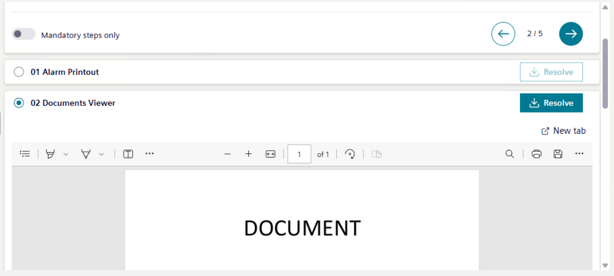

Executing a Document Step in Assisted Treatment
- You are in assisted treatment and the operating procedure includes a document step that you want to do.
- Scroll the steps list, and select the [document step].
- The content of the document displays on the screen.

- Read the document carefully and follow any instructions.
- If a PDF file displays, use the incorporated controls to zoom in, zoom out, print, or download the document.
- If a web page displays, open the document in a separate window or tab, and then use the incorporated controls to zoom in, zoom out, print, or download the web content.
- You can also search for text in a PDF or on a web page by pressing CTRL+F or from the menu.
- If available, move backward or forward through any related-item documents included in this step, and then repeat the previous step.